Minesweeper

In diesem Spiel musst du die Bomben im Spielfeld finden. Klicke auf eine Zelle um sie umzudrehen. Wenn du gleichzeitig die Leertaste drückst, markierst du eine Zelle als Bombe.
| Figuren | 2 |
| Skripte | 15 |
| Variablen | 6 |
In diesem Spiel musst du die Bomben im Spielfeld finden. Klicke auf eine Zelle um sie umzudrehen. Wenn du gleichzeitig die Leertaste drückst, markierst du eine Zelle als Bombe.
| Figuren | 2 |
| Skripte | 15 |
| Variablen | 6 |
Das Spiel besteht aus nur zwei Figuren: einer Zelle für das Spielfeld und verschiedenen Nachrichten, die dem Spieler angezeigt werden können.
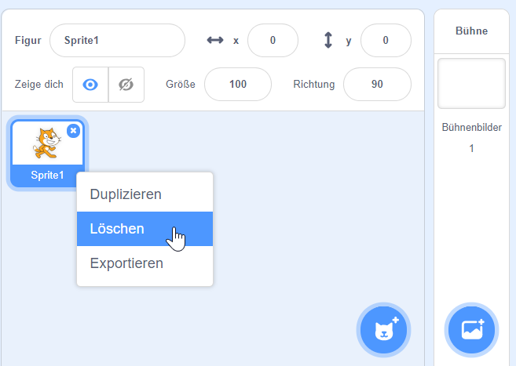{: .right} Lösche als erstes die Figur Scratchy mit dem Namen Sprite 1 indem du mit der rechten Maustaste darauf klickst. Im angezeigten Menü kannst du Scratchy löschen.
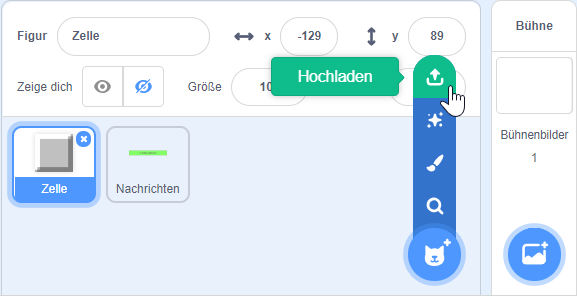{: .right} Die Figur Zelle besteht aus mehreren Kostümen; einer nicht aufgedeckten Zelle, einer Bombe, einer leeren Zelle, einer Fahne und den Ziffern 1 bis 8. Damit du nicht alle Figuren selbst zeichnen musst, kannst du die Figur unter https://scratch-minesweeper/Zelle.sprite2/ downloaden.
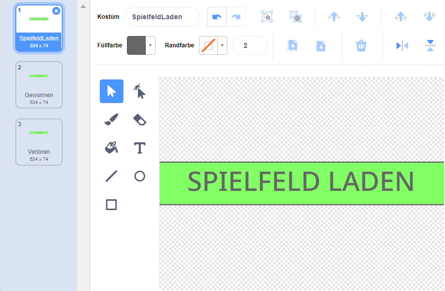{: .right} Die zweite Figur Nachrichten besteht aus drei Kostümen: den Nachrichten Spielfeld laden, Gewonnen und Verloren. Diese kannst du nach deinen Vorstellungen gestalten.
In diesem Spiel werden eine ganze Menge an Daten benötigt. Sie werden später in den Skripten verwendet. Lege als erstes folgende Daten an:
Wenn du alle Variablen und Listen richtig angelegt hast, solltest du bei den Figuren Zelle und Nachrichten folgende Daten sehen:
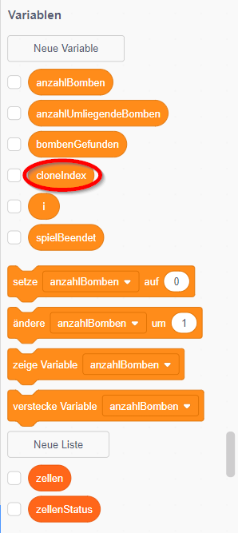
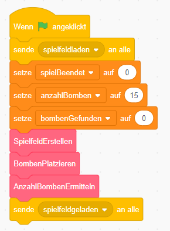{: .right} Als erstes müssen wir das Spielfeld initialisieren. Dazu schicken wir zuerst einmal eine Nachricht an die Figur Nachrichten, dass die Meldung Spielfeld laden angezeigt werden soll. Dann werden die Daten auf einen passenden Wert gesetzt. Als nächstes erstellen wir das Spielfeld, platzieren die Bomben und ermitteln für jedes Feld die Anzahl der umliegenden Bomben. Dazu verwenden wir eigene, neue Blöcke. Der Inhalt dazu kommt später. Am Schluss schicken wir nochmal eine Nachricht, dass das Spielfeld jetzt fertig geladen ist.
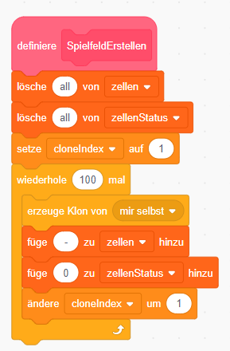{: .right} Zum Erstellen des Spielfelds füllen wir die Listen zellen und zellenStatus mit Initialwerten. Die Liste zellen enthält für jede der 100 Positionen (10 x 10) auf dem Spielfeld eine der folgenden Informationen: - = nicht definiert, b = Bombe, 1 = 1 Bombe in den umliegenden Zellen, 2 = 2 Bomben in den umliegenden Zellen, usw. Zum Initialisieren setzen wir den Wert - für nicht definiert. Die Liste zellenStatus enthält für jede Zelle nur die Information, ob sie aufgedeckt sein soll (0 = nicht aufgedeckt, 1 = aufgedeckt). Das brauchen wir erst später, um bei Klick auf eine Zelle ohne umliegende Bomben automatisch auch die umliegenden Zellen aufzudecken. Außerdem erzeugen wir für jedes Feld einen Klon der Zelle. Diese wird dann im nächsten Skript an der richtigen Position im Spielfeld platziert.
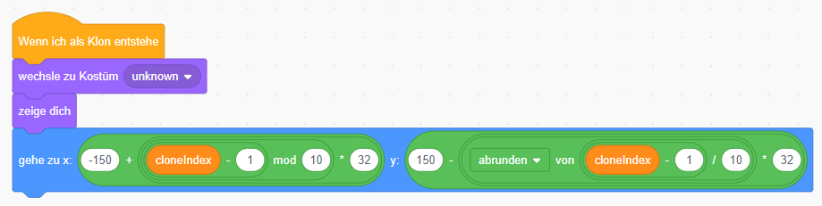{: .right}
Sobald ein Klon einer Zelle entsteht, wechseln wir das Kostüm auf unknown und zeigen den Klon an.
Die Positionen werden auf folgende Werte gesetzt:
x = -150 + (((cloneIndex - 1) mod 10) * 32)
y = 150 - ((abrunden von ((cloneIndex - 1) / 10)) * 32)
Wenn du das Spiel jetzt laufen lässt, müsste schon das Spielfeld aufgebaut werden.
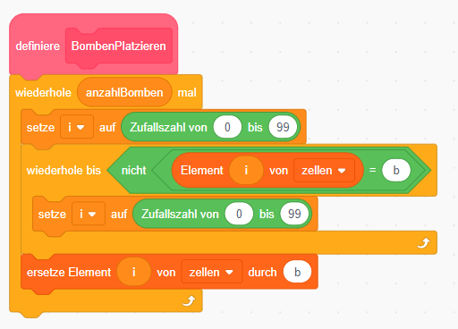{: .right} Jetzt werden auf dem Spielfeld die Bomben platziert. Mittels Zufallszahl wird die Position der Bomben ermittelt und in der Liste zellen mit einem b gekennzeichnet.
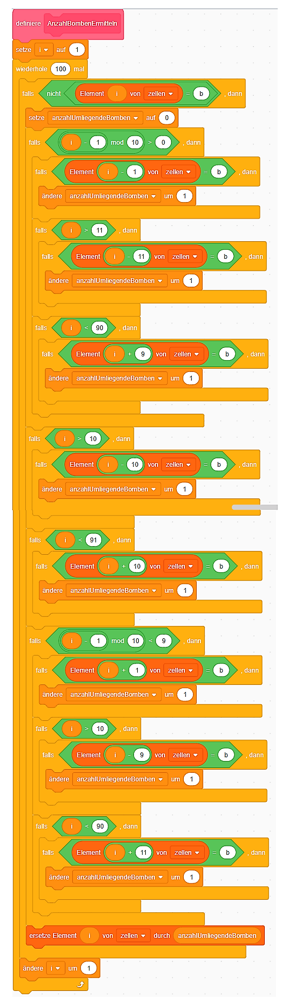{: .right} Jetzt kommt der wirklich schwierige Teil - wir müssen für jede Zelle am Spielfeld ermitteln, wie viele Bomben an sie angrenzen. Das sind im besten Fall 0 und im schlechtesten Fall 8, wenn alle umliegenden Zellen Bomben enthalten. Je nachdem, ob die Zelle im Eck, am Rand, oder in der Mitte liegt, hat sie mehr oder weniger umliegende Zellen. Das prüfen wir in diesem Skript und für jede der Zellen sehen wir nach, ob sie eine Bombe enthält. Am Ende tragen wir die ermittelte Zahl der Bomben in die Liste zellen ein.
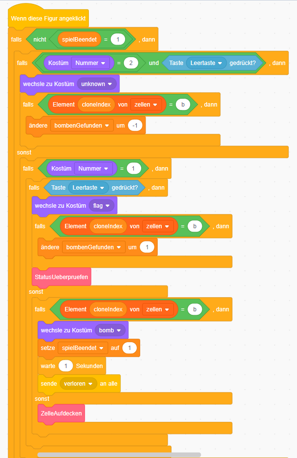{: .right} Nun können wir mit dem Spiel starten, der Spieler kann die erste Zelle anklicken. Mit der linken Maustaste wird eine Zelle aufgedeckt. Wird gleichzeitig die Leertaste gedrückt, wird eine Fahne gesetzt oder wieder entfernt. Falls eine Fahne zum Markieren einer Bombe gesetzt wird, müssen wir nachher überprüfen, ob schon alle Bomben gefunden wurden. Wird eine Zelle zum Aufdecken angeklickt, müssen wir dann das Kostüm ändern.
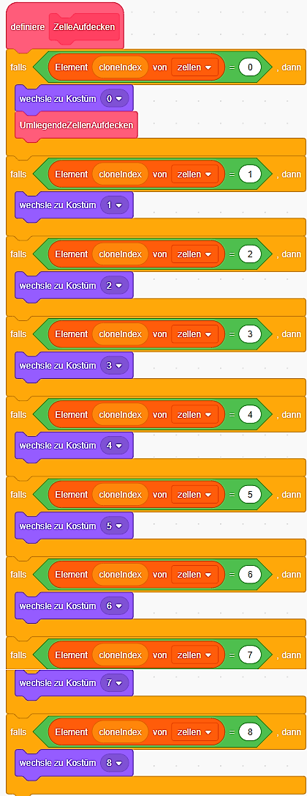{: .right} Die Liste zellen enthält für jede Zelle die Anzahl der umliegenden Bomben. Wir müssen nach dem Anklicken nur noch das richtige Kostüm für die Zelle anzeigen. Du kannst das Skript UmliegendeZellenAufdecken noch leer lassen. Das Spiel wird jetzt schon funktionieren. Du kannst jetzt gleich ausprobieren, ob du alle Bomben findest.
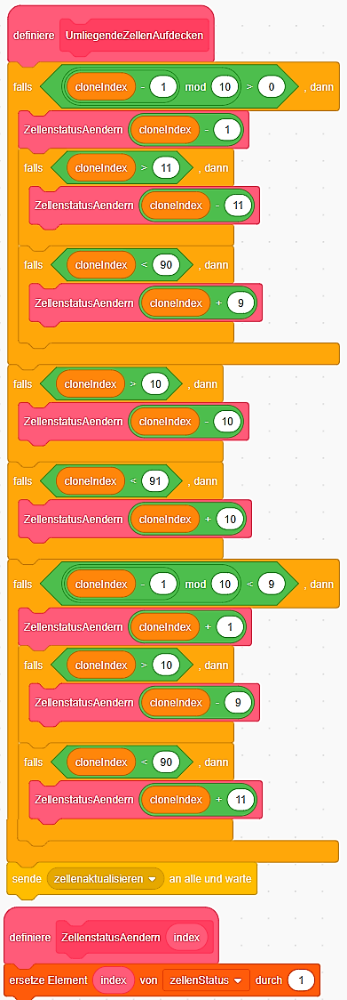{: .right} Wenn du das Skript UmliegendeZellenAufdecken implementierst, wird das Spiel noch besser. Wenn du eine Zelle ohne angrenzende Bomben anklickst, werden automatisch alle umliegenden Zellen aufgedeckt, solange bis Zellen mit angrenzenden Bomben gefunden werden. So musst du nicht alle Zellen mit dem Wert 0 selbst anklicken und kannst viel schneller spielen. In diesem Script werden alle Zellen, die aufgedeckt werden sollen, in der Liste zellenStatus mit 1 markiert. Dann wird die Nachricht zellenAktualiseren gesendet.
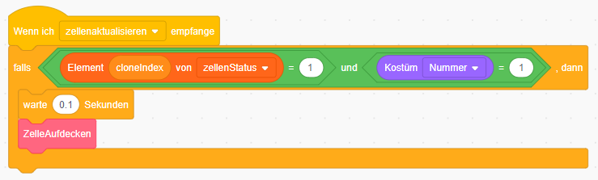{: .right} Wenn die Nachricht zellenAktualiseren dann von jedem einzelnen Klon empfangen wird, prüft dieser, ob seine Position in der Liste zellenStatus schon mit 1 markiert ist. Wenn ja, wird die Zelle aufgedeckt.
Du kannst das fertige Projekt unter minesweeper.sb3 herunterladen.